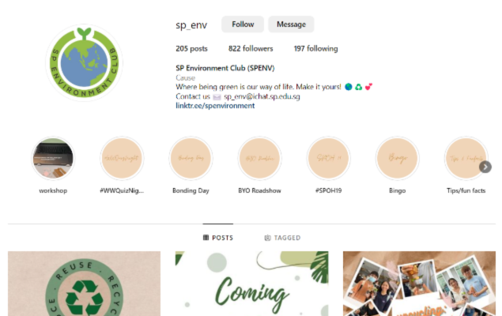
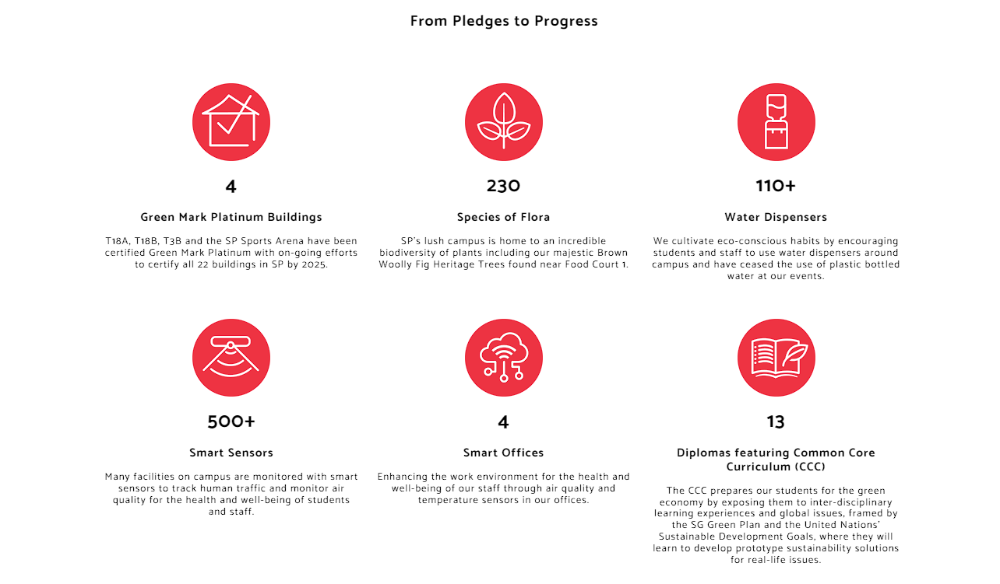
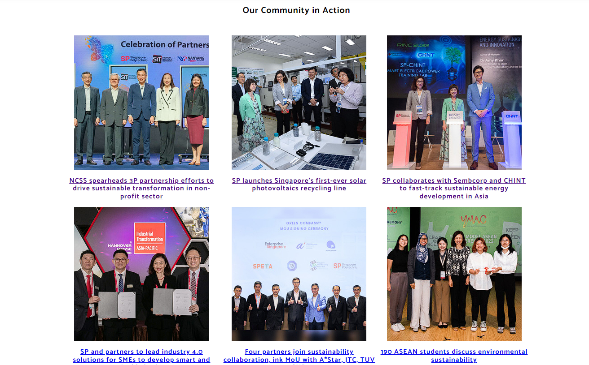

What has SP done?

- SP Enviromental Club
- ·SP has it's own enviromental club which is a CCA group commited to promoting enviromental awareness and a sustainable lifestyle both on campus and beyond
- ·SP enviromental club hosts events such as "Recycle potted plant", which is a event where you bring your own plastic bottle and they will guide you on how to grow a plant inside the bottle.
- ·SP enviromental club also makes informative posters such as the '4 Plastic Donation Rules' where they teach you what are the steps to follow before donating your plastic
- ·If your interested, please click on this link to find out more regarding on what SP enviromental club does.

- SP sustainability matters
- ·SP's pledge to sustainability matters "We pledge to green our campus, reduce our enviromental impact and nurture stewards of sustainability.
- ·SP has made 6 targets to achieve Enviromental Sustainability.
- ·Firstly, SP has plans to certify all 22 buildings to be Green Mark Platinum Buildings by 2025. Currently four buildings in SP has already been Green Mark Platinum certified.
- ·The SP campus is also home to 230species of Flora and Fauna found near Food Court 1.
- ·SP has also installed over 110 water dispensers all around the school to discourage usage of plastic bottles and encourage eco-conscious habits.
- ·To find out more regarding the other pledges SP has made, click on this link.

- SP Community in Action
- ·SP has done some initiatives regarding Enviromental Sustainability.
- ·SP launched Singapore's first-ever solar photovoltaics recycling line, which takes apart solar panels to recycle its components.
- ·To find out more regarding the photovoltaics recycling line, click on this link.
- ·SP has also collaborated with Sembcorp and CHINT to develop innovative sustainable energy solutions.
- ·They also plan to build a talent pipeline for green energy and photovoltaics industry in the region.
- ·To find out more regarding the collaboration, click on this link.
- ·Click on the picture for more information regarding what SP has done.